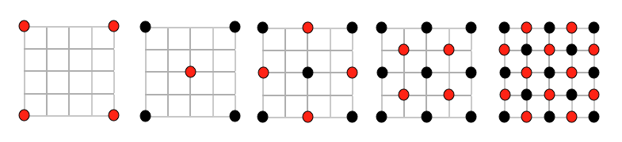
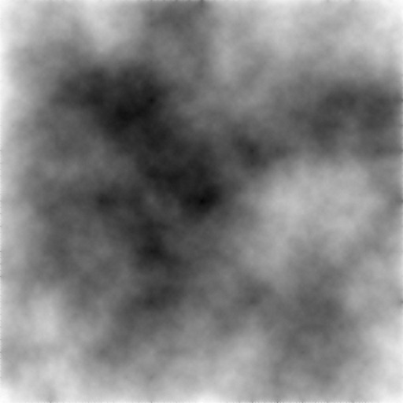

I have posted previously about a simple terrain heightmap display program I have made, but never talked about some of the methods of generating and manipulating heightmap based terrain systems.
The method I have implemented in my terrain generation program is known as the Diamond-Square algorithm and is a method of procedural terrain generation. The Diamond-Square algorithm is also known as random midpoint displacement fractal, cloud fractal or the plasma fractal.
We start with a 2D array of size (n^2 + 1) E.g. 257, 513 etc. Set the four corners to initial values, these can be random or preset it doesn't really matter too much at this point.
We then perform the diamond step which consists of taking the four points arranged in a square shape, averaging the four values and adding a random value to the average, creating diamond shapes. The square step then averages the four corners of the diamonds created in the previous step. The center value of this step becomes the corners of the next step. The diamond and square step are repeated until all the points in the grid have values assigned to them.

The image above shows the alternating steps being carried out. The red dots are the pixels with new values, the black dots are pixels with existing values. The pseudocode is as follows:
While the length of the side of the squares is greater than zero {
Pass through the array and perform the diamond step for each square present.
Pass through the array and perform the square step for each diamond present.
Reduce the random number range.
} Then we end up with a program that can generate terrain / cloud maps / general fractal noise. Below is an example image that I have generated at 512x512.

Below is a sample of what the terrain looks like with
simple shading in OpenGL without textures. The shading effect
is calculated by giving a colour based on the minimum and
maximum values of the heightmap. E.g.
VertexColour = (value - minY) / (maxY - minY);

I find that the easiest way to import data from my terrain generation program into the display program is to use the built-in IO functions to create an easy to read file format. The advantage of using this method is that you can store heights as floating point values instead of bytes (0-255) this gives many more possible heights, a greater dynamic range. The code to write these files is quite simple:
void SaveTerrFile(){
//Write to file
FILE *fp;
fp = fopen("terrain.terr", "wb");
//print out the data
for(int x=0; x < DATA_SIZE-1; x++){
for(int y=0; y < DATA_SIZE-1; y++){
//populate the point struct
point.x = x;
point.y = data[x][y];
point.z = y;
//smooth out the range a bit
point.y = (point.y-minY)/(maxY-minY);
point.y *= 255;
//write to file
fwrite(&point, sizeof(point), 1, fp);
}
}
//close file pointer
fclose(fp);
}Other features that I think need to be added to this code is the ability to generate textures as well based on the height values, smoothing of the terrain and improvements to the viewer. For now though, here is some source code. This code saves the height values to a file. I haven't included any image saving functionality in this version because I am not sure of the licensing issues that may arise.
Other Useful Links / Articles:
http://www.gameprogrammer.com/fractal.html#diamondhttp://stackoverflow.com/questions/2755750/diamond-square-algorithmhttp://en.wikipedia.org/wiki/Diamond-square_algorithm